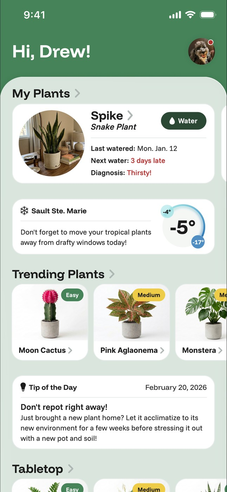
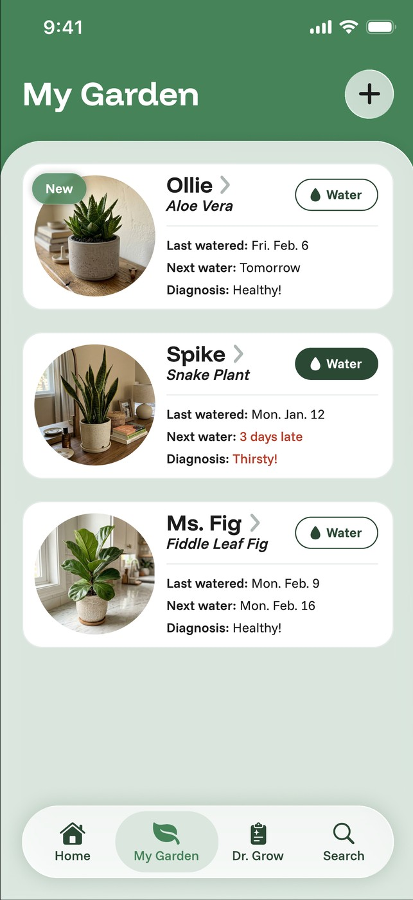
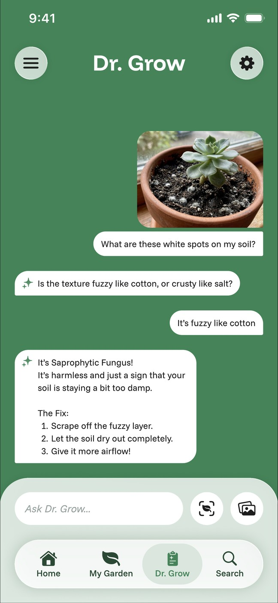
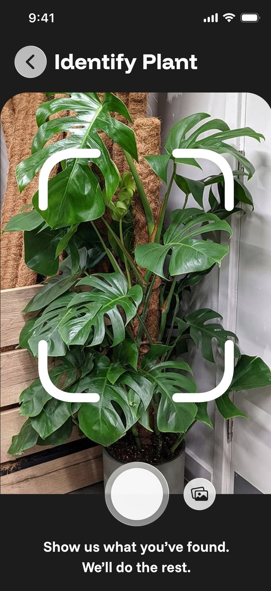
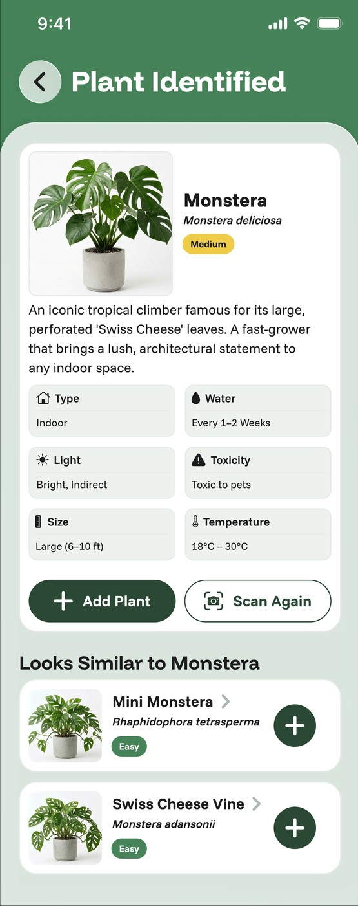
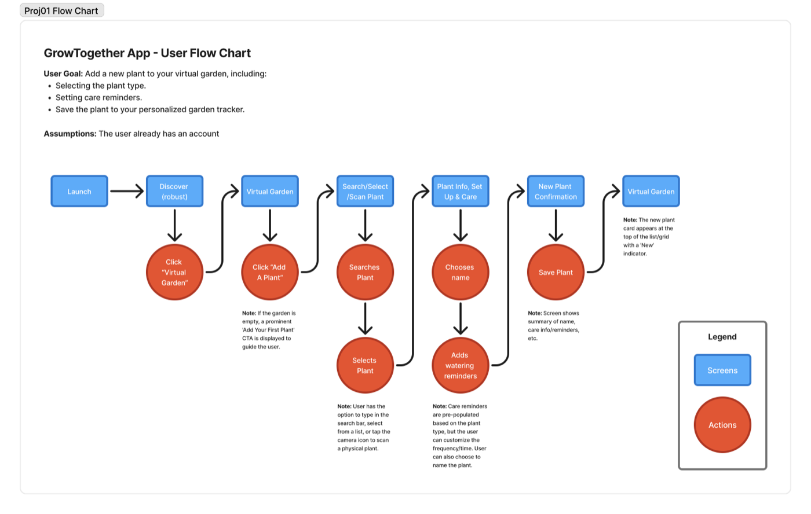
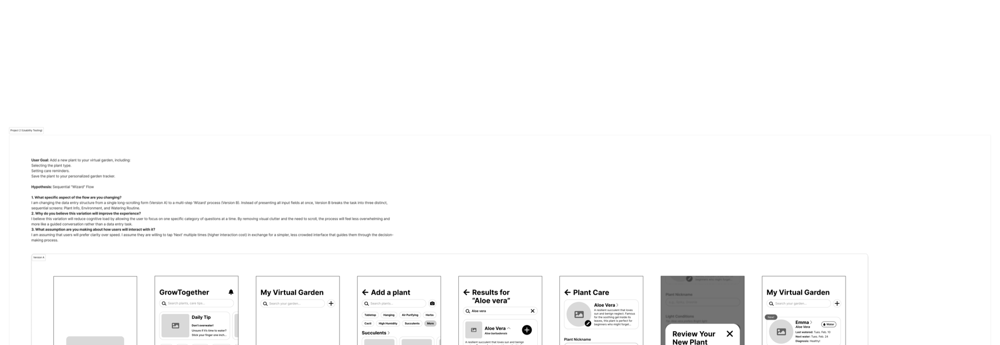
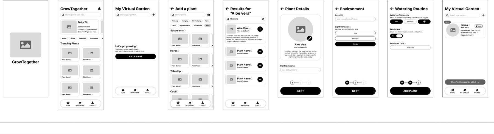
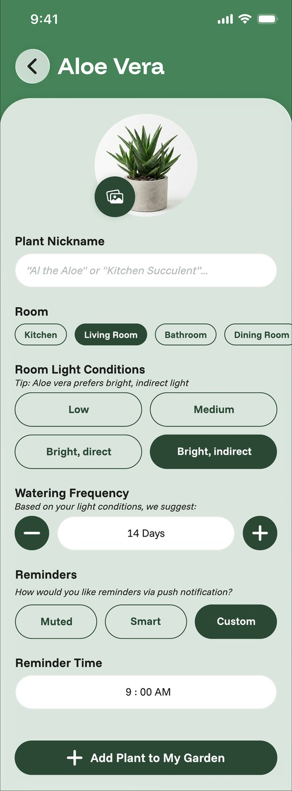
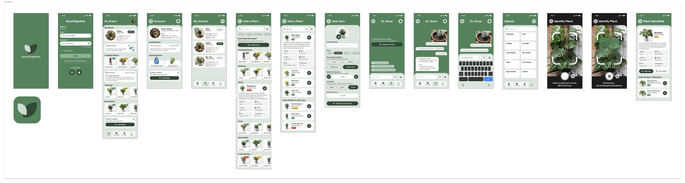

02 — UX/UI Design, IA & Usability Testing
GrowTogether is a plant-care app concept I took from information architecture and user flows through two competing "add a plant" directions to a round of moderated usability testing. This is the decision trail, not just the final screens.



Role
Sole UX/UI Designer
Timeline
Winter 2026
Context
Academic Project
Focus
IA · Wireframing · Usability Testing · UI
The Problem
The brief was to design a single place for the needs that came up again and again for people trying to keep houseplants alive:
Organizing every plant's information in one place
Tracking ongoing care and watering over time
Adding new plants to a personal collection
Identifying an unfamiliar plant on sight
Receiving timely, useful care reminders
Getting diagnosis support when something looks wrong
The Experience — four screens, one interface
The home screen leads with what's actionable: the plant due for water, a local weather note that affects care, and a daily tip — reference content sits below it. Priority by hierarchy, not by menu-diving.
The garden view shows each plant's last-watered date, next-due date, and a plain-language status (Healthy, Thirsty). The goal was scannability — catch a problem in a glance, before it needs a diagnosis.
Instead of sending users off to search a vague symptom, Dr. Grow walks it back to a specific answer: describe what's wrong, answer a follow-up or two, get a named cause and concrete steps — here, white soil spots identified as harmless fungus.


Frame an unknown plant, scan, and land on a full care profile with look-alikes — shown here as an input/output pair so the flow reads at a glance. It closes the loop back into tracking: identify, then add.
The Design Question
One fast, single-scroll form. One guided, three-step wizard.
The core task — adding a plant and setting up its care — was built and tested as two deliberately different interaction models. The question wasn't which looked better. It was: does seeing everything at once beat being guided step by step?
Information Architecture
Launch → Discover → Virtual Garden → Search / Select / Scan → Plant Info Setup & Care → New Plant Confirmation → back to the Virtual Garden. The path a person takes to add and set up a plant, planned as a flow first.

Two Approaches
The "Add a Plant" flow was designed as two real directions — not a right answer and a throwaway. Version A puts every field on one scrolling screen. Version B breaks the same task into a guided three-step sequence.


Select a version, then scroll the panel horizontally to follow the full flow →
Usability Testing
Both versions were tested with three participants completing the same task: search for and add an Aloe Vera to their garden. All three preferred Version A — but not for identical reasons, and not without noticing what Version B did well.
Lilly
Participant 01
Found Version B's repeated confirmation steps repetitive — configuring care, then reviewing it again. Preferred Version A as faster and less tedious, even though it asked for more at once.
Preferred Version AHunter
Participant 02
Completed both versions with zero navigation friction, but found Version B's step transitions abrupt. Preferred seeing all the information "at once" over having it split across steps.
Preferred Version ABrookelyn
Participant 03
Praised Version B's step-by-step layout for breaking the task into "easier to take in" chunks — and thought it would be more accessible for beginners or elderly users. Still preferred Version A for speed.
Preferred Version A↳ Accessibility insight
The result was a trade-off, not a clean win. Speed and directness won for this task and this group — but Version B's guided structure surfaced a real accessibility advantage worth carrying forward, not discarding.
Insight to Iteration
Early drafts used placeholder names ("Emma," "Mr. Ficus") and a rougher fidelity. The finished flow replaced them with details that read like a real garden ("Ollie," "Ms. Fig") and a polished Plant Care setup — some of it from testing, some just honest iteration toward a state worth shipping.

The Finished App

Reflection
Version A's visual economy won with this group — but that doesn't make Version B a mistake. The accessibility observation, that smaller steps were easier to take in, is a real signal, not a consolation prize.
Testing two models instead of committing early is what surfaced that trade-off at all. A broader group — including beginners and people with accessibility needs — is the natural next test.
Looking for a visual designer, or have a project in mind? I'd love to hear from you.
Get in touch